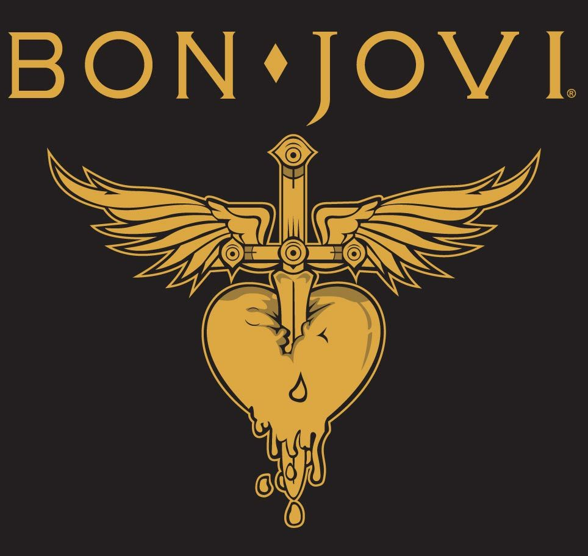
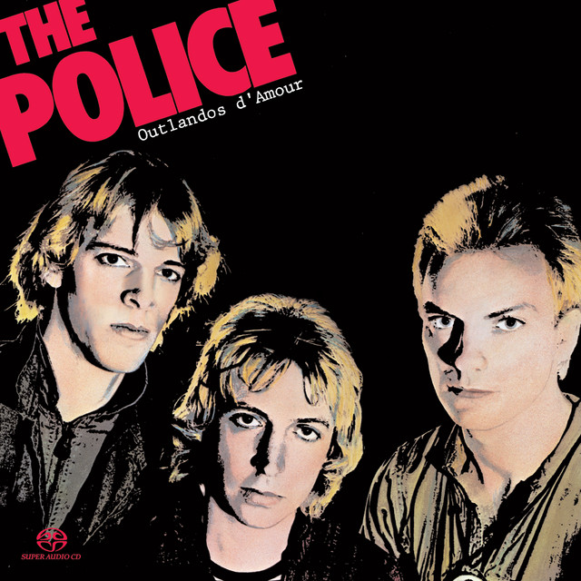

Información
Nirvana fue una banda de rock estadounidense formada en Aberdeen, Washington en 1987. Fundada por el cantante y guitarrista Kurt Cobain y el bajista Krist Novoselic , la banda pasó por una sucesión de bateristas, sobre todo Chad Channing , antes de reclutar a Dave Grohl en 1990. El éxito de Nirvana popularizó el rock alternativo , y a menudo se los mencionaba como la banda de proa de la Generación X. Su música mantiene un seguimiento popular y continúa influyendo en la cultura del rock moderno.
Integrantes
Kurt Cobain: Guitarrista-vocalista principal-compositor
Krist Novosolic: Bajista
Davi Grohl: Baterista
Canciones
|  |
 |
|||
|  |